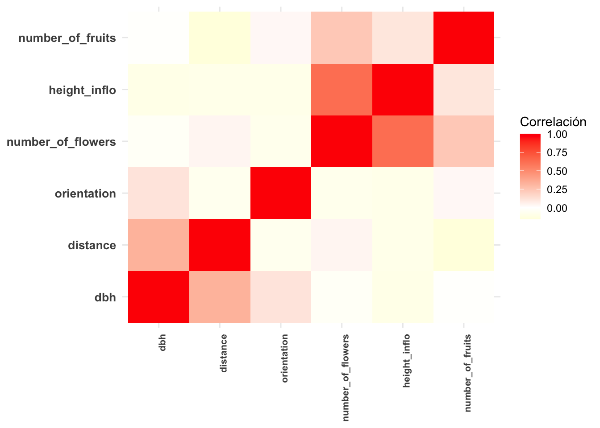

G12_Mapas_Calor
Fecha de la ultima revisión
## [1] "2020-08-17"La lista de packetes para analisis de los Mapas de calor
library(ggversa)
library(GGally)
library(tidyverse)
library(kableExtra)
library(reshape2)Mapas de calor o mapas críticos o Heat Maps con geom_tile
Cuando hay muchas variables en el análisis, a veces podría ser más fácil observar las diferencias entre ellas usando colores en vez de números; por ejemplo, para visualizar los coeficientes de correlación entre pares de variables continuas. Un mapa de calor (heat map en inglés) nos puede ayudar pues justamente es una visualización con gradientes de colores de valores continuos. Continuaremos utilizando la base de datos de la orquídea Dipodium para explicar los tres pasos para construir un mapa de calor de los coeficientes de correlación.
Primero, necesitamos calcular los coeficientes de correlación con la opción cor. Luego visualizaremos los datos con la función kable.
DWCor=round(cor(dipodium[c(3, 6, 8, 9, 13)],
use="pairwise.complete.obs"),3)
kable(DWCor) %>%
kable_styling(bootstrap_options = "striped", full_width = F, font_size = 10) | DBH | Distance | Number_of_Flowers | Height_Inflo | Number_of_fruits | |
|---|---|---|---|---|---|
| DBH | 1.000 | 0.329 | -0.035 | -0.100 | -0.009 |
| Distance | 0.329 | 1.000 | 0.042 | -0.095 | -0.157 |
| Number_of_Flowers | -0.035 | 0.042 | 1.000 | 0.818 | 0.234 |
| Height_Inflo | -0.100 | -0.095 | 0.818 | 1.000 | 0.106 |
| Number_of_fruits | -0.009 | -0.157 | 0.234 | 0.106 | 1.000 |
Segundo, reorganizaremos los datos en un data.frame usando la librería reshape2 y la opción melt. En nuestro caso, lo que queremos es producir un data.frame con solo dos columnas con las variables en pares con su respectivo valor de correlación. En el nuevo data.frame, DWMelt, vemos tres columnas cada una representando las variables y la última con el valor de correlación.
Matriz de correlaciones
DWMelt= melt(DWCor, varnames= c("x1", "y1"),
value.name = "Correlation")
head(DWMelt)## x1 y1 Correlation
## 1 DBH DBH 1.000
## 2 Distance DBH 0.329
## 3 Number_of_Flowers DBH -0.035
## 4 Height_Inflo DBH -0.100
## 5 Number_of_fruits DBH -0.009
## 6 DBH Distance 0.329Finalmente, el tercer paso es producir la figura con geom_tile. El gráfico de la Figura se produce sin modificar los parámetros. En el segundo gráfico se modifican los colores usando la guía de color para asignarlos a diferentes grupos a la vez que se remueven los nombres de los ejes de X y de Y. A este mapa de calor básico se le asignan las variables de x y y y el valor que queremos que tenga un rango de color, en este caso el valor de correlación. Para remover el nombre de la variables x y y, se usa labs(x=NULL, y=NULL), ya que ggplot2 lo pone automáticamente cuando se construye un gráfico.
ggplot(DWMelt, aes(x=x1, y=y1))+
geom_tile(aes(fill=Correlation))+
theme(axis.text.y=element_text(size=10, face="bold"),
axis.text.x=element_text(size=8, face="bold", angle = 90, hjust = 1))+
labs(fill="Correlación")
Le cambiamos los colores del gráfico, usando scale_fill_gradient2. Asignamos los valores más bajos al color amarillo, los más altos al rojo y los valores intermedios al color anaranjado. Para esta opción de scale_fill_gradient2, hay que asignar tanto los colores al extremo y el del medio. El resultado se puede ver en la Figura. Note que los valores de correlaciones varían de -1 a +1. El límite del rango se asigna especificando limits=c(valor mínimo, valor máximo). Dado esto, en este ejemplo la intensidad de colores no es tan amplia porque no hay valores muy negativos.
ggplot(DWMelt, aes(x=x1, y=y1))+
geom_tile(aes(fill=Correlation))+
scale_fill_gradient2(low="white",
mid="orange", high="red",
guide=guide_colorbar(ticks=FALSE,
barheight=5, limits=c(-1,1)))+
theme_minimal()+
labs(x=NULL, y=NULL)+
theme(axis.title=element_text(size=20,face="bold"),
axis.text.y=element_text(size=10, face="bold"),
axis.text.x=element_text(size=8, face="bold", angle = 90, hjust = 1))+
labs(fill="Correlación")
En el siguiente gráfico, se cambia el valor intermedio a blanco (para valores más cercanos a cero).
ggplot(DWMelt, aes(x=x1, y=y1))+
geom_tile(aes(fill=Correlation))+
scale_fill_gradient2(low="yellow",
mid="white", high="red",
guide=guide_colorbar(ticks=FALSE,
barheight=5, limits=c(-1,1)))+
theme_minimal()+
labs(x=NULL, y=NULL)+
theme(axis.title=element_text(size=20,face="bold"),
axis.text.y=element_text(size=10, face="bold"),
axis.text.x=element_text(size=8, face="bold", angle = 90, hjust = 1))+
labs(fill="Correlación")
Se puede también hacer la selección de solamente dos colores con la función scale_fill_gradient (vea que esa opción no es lo mismo que scale_fill_gradient2). En este caso los gradientes de colores en el centro de la distribución (el cero) no está definido.
ggplot(DWMelt, aes(x=x1, y=y1))+
geom_tile(aes(fill=Correlation))+
scale_fill_gradient(low="white",
high="red", limits=c(-1,1))+
theme_minimal()+labs(x=NULL, y=NULL)+
theme(axis.title=element_text(size=20,face="bold"),
axis.text.y=element_text(size=10, face="bold"),
axis.text.x=element_text(size=8, face="bold", angle = 90, hjust = 1))+
labs(fill="Correlación")
La función ggcorr
La función ggcor tiene la ventaja de producir un gráfico de calor que representa solamente un espejo de los resultados. En los gráficos anteriores las misma información estaba ariba y abajo de la diagonal. Este represente solamente uno de los dos.
ggcorr(DWCor, low = "steelblue", mid = "white", high = "darkred", nbreaks=5)
Para un segundo ejemplo de ggcorr
ggcorr(DWCor, geom = "blank", label = TRUE, hjust = 0.75) +
geom_point(size = 10, aes(color = coefficient > 0, alpha = abs(coefficient) > 0.5)) +
scale_alpha_manual(values = c("TRUE" = 0.25, "FALSE" = 0)) +
guides(color = FALSE, alpha = FALSE)
Para muchos ejemplos vea este enlace. https://briatte.github.io/ggcorr/
Opciones y Parametros de geom_tile
ggplot(el archivo de datos, aes(x= la variable discreta, y=variable continua, ymax= el valor máximo, ymin= el valor mínimo))
geom_tile(x, y, alpha, color, fill, linetype, size)
alpha: la intensidad del color
color: el color de la línea
fill: el color de los cuadros
linetype: representa el estilo de línea
size: representa el ancho de la línea